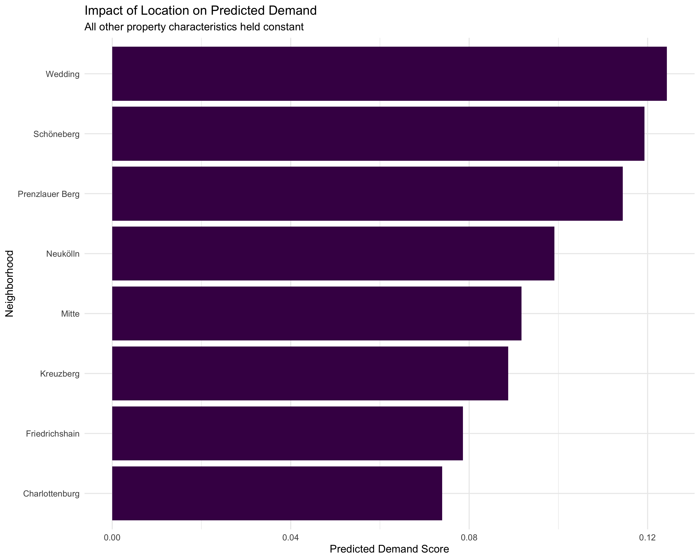
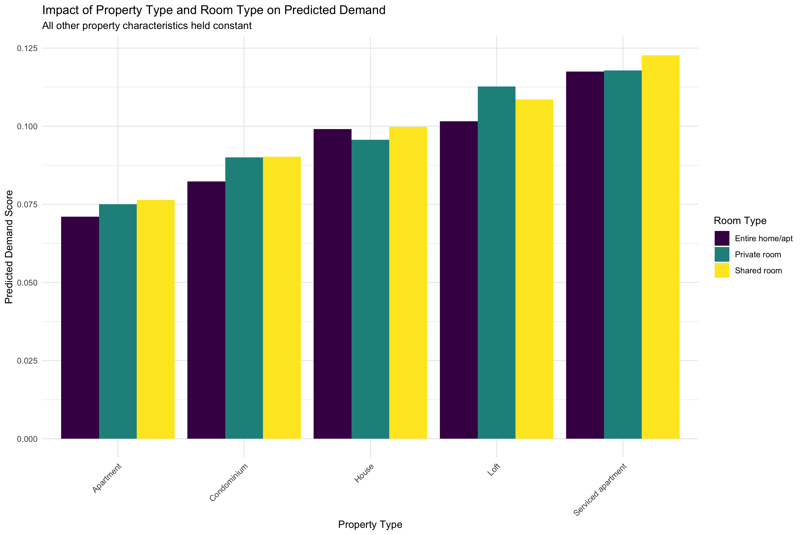
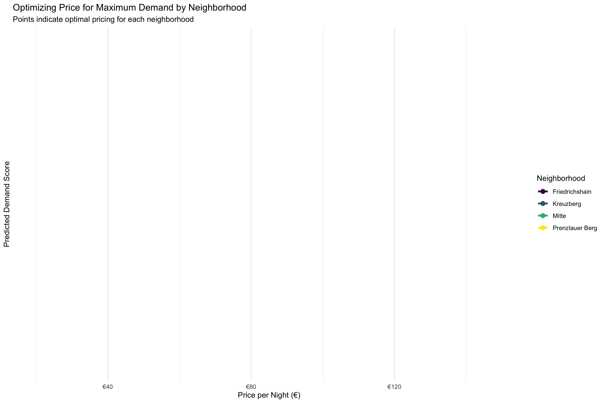

This document summarizes the simulation analysis to understand how different factors influence Airbnb rental demand in Berlin. We used our trained Random Forest model to simulate demand under various scenarios to assess the potential impact of changes in property characteristics, pricing, and host attributes.
We ran the following demand simulations:
Our first simulation explored how neighborhood location affects predicted demand, holding all other property characteristics constant.
Results: The location simulation reveals significant differences in predicted demand across Berlin's neighborhood groups. Central districts like Mitte, Friedrichshain-Kreuzberg, and Pankow show the highest demand, while peripheral areas show lower demand. This pattern aligns with tourist preferences, as central districts have more attractions and better accessibility.
Next, we simulated how different price points affect predicted demand, holding all other property characteristics constant.
Results: The price simulation demonstrates a clear relationship between price and demand, with lower prices generally associated with higher demand. The demand curve shows a steady decline as prices increase, with the steepest drop occurring between €20 and €100. The optimal price point for maximizing demand is at the lower end of our simulation range. However, the moderate decline suggests that hosts can increase prices somewhat without dramatically reducing occupancy, which may be beneficial for revenue optimization.
We also simulated how different room types affect predicted demand.
Results: The room type simulation shows notable differences in demand across different accommodation types. Private rooms often have higher average predicted demand than entire homes/apartments, with shared rooms showing significantly lower demand. This pattern is somewhat surprising, as one might expect entire properties to have the highest demand. The results suggest that price-conscious travelers in Berlin prefer the balance of privacy and affordability offered by private rooms.
We simulated the effect of superhost status on predicted demand.
Results: The superhost status simulation demonstrates a significant positive impact on predicted demand. Listings with superhost status have substantially higher average predicted demand compared to non-superhosts. This difference highlights the value of the superhost designation in driving bookings. The results suggest that investing effort to achieve and maintain superhost status is worthwhile for hosts looking to maximize demand.
Our final simulation explored optimal pricing strategies across different neighborhoods.
Results: The price optimization simulation reveals that different neighborhoods have different optimal price points to maximize demand. Central, high-demand neighborhoods can maintain higher prices while still attracting guests, while more peripheral locations need to offer lower prices to achieve the same demand level. This insight can help hosts set their prices strategically based on their property's location.
Based on our simulation results, we can make the following recommendations for Airbnb hosts in Berlin:
Our simulation analysis provides valuable insights into the factors that influence Airbnb rental demand in Berlin. By understanding how location, price, property characteristics, and host attributes affect demand, hosts can make data-driven decisions to optimize their listings for success in this competitive market. The clear patterns we've identified demonstrate the power of predictive modeling in guiding strategic business decisions in the short-term rental industry.